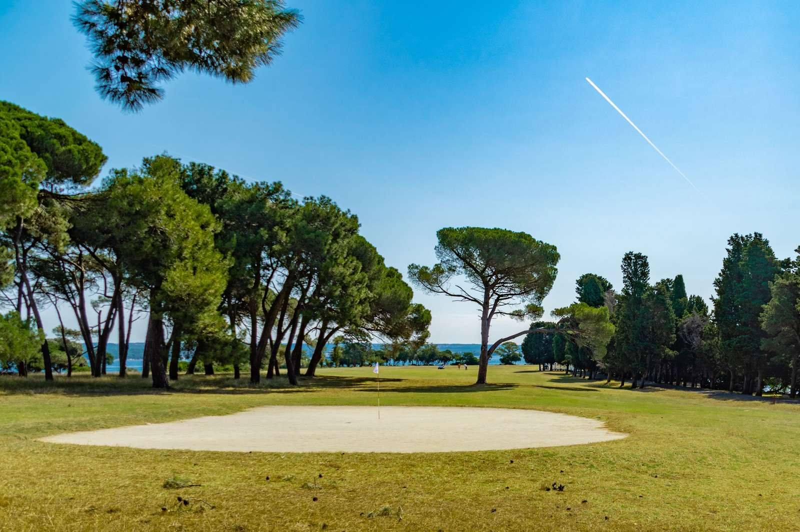
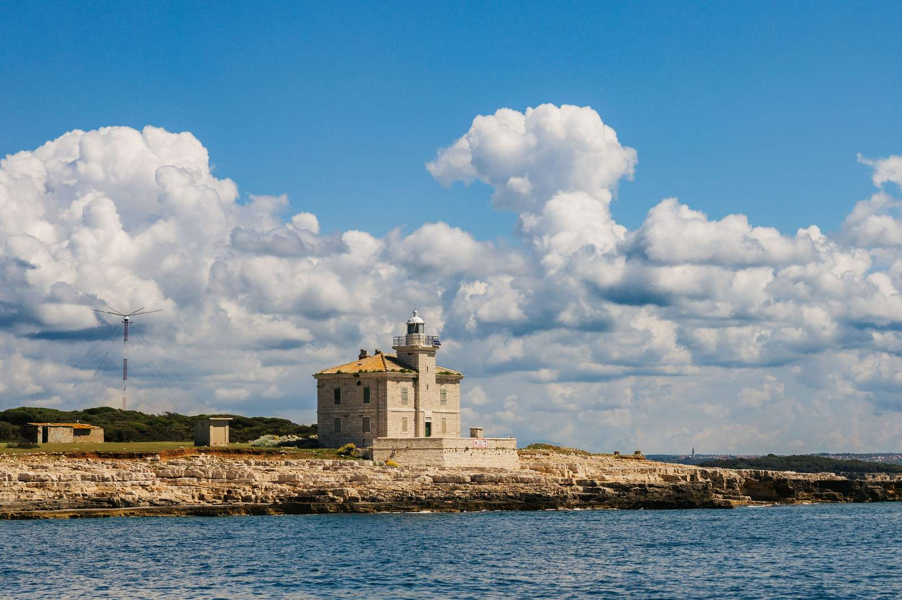
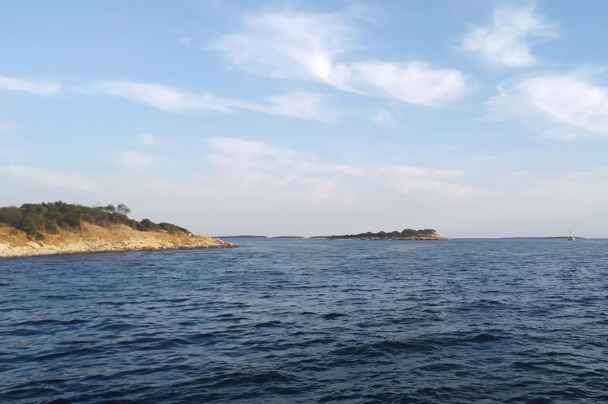
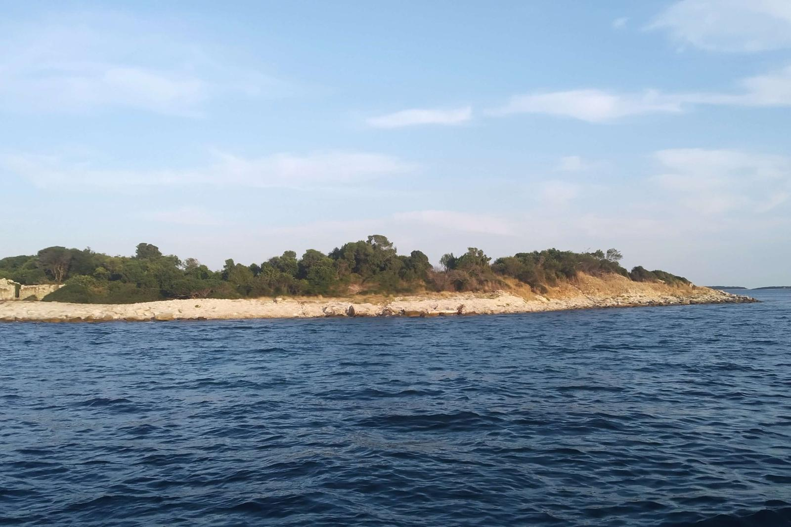

Izlet brodom na Brijune
Nacionalni park viđen s mora, samo kratko krstarenje od Pule.

- Otoci
- 14 otoka i otočića
- More ljeti
- 22–25 °C
- Dnevna tura
- 12:00–16:30
- Tura u zalazak sunca
- 18:00–21:00
Arhipelag uz obalu
Brijunski arhipelag leži tik uz obalu kod Pule i Fažane. Čini ga 14 otoka i otočića: Veliki Brijun, Mali Brijun, Vanga, Sveti Jerolim, Sveti Marko, Kozada, Pusti Otok, Gaz, Galija, Obljak, Grunj, Supin, Supinić i Vrsar.
More među njima je mirno i bistro, a obala se mijenja od zelenih šuma do stjenovitih rtova i skrivenih uvala. Upravo zbog te raznolikosti polagano krstarenje ovdje ima toliko čari.

Kratka povijest
Brijuni su naseljeni tisućama godina, a rimski ostaci još se vide na obali. U dvadesetom stoljeću otoci su postali ljetna rezidencija Josipa Broza Tita, predsjednika Jugoslavije, koji je ovdje ugošćivao svjetske državnike i filmske zvijezde. Danas su nacionalni park otvoren za posjetitelje.
Klima i kupanje
Otoci imaju blagu mediteransku klimu. Ljeti je temperatura mora obično između 22 i 25 °C, dovoljno toplo za dugo kupanje kod Svetog Jerolima.
Vaše mogućnosti iz Pule
Pogledajte obje ture detaljno →
- Dnevna tura, 12:00–16:30: krstarenje oko Brijuna i dva sata kupanja kod Svetog Jerolima, 50 € po odrasloj osobi.
- Tura u zalazak sunca, 18:00–21:00: večernje krstarenje uz priliku da vidite dupine, 50 € po odrasloj osobi.
- Obrok i neograničeno piće uključeni su na obje ture, a djeca do 3 godine putuju besplatno.
- Dnevna tura: 12:00–16:30
- Tura u zalazak sunca: 18:00–21:00
- Obrok i neograničeno piće
- Djeca do 3 godine: besplatno
Fotografije


Dobro je znati prije polaska
Ulaznica za park
Na dnevnoj turi na Svetom Jerolimu plaća se mala ulaznica. Na turi u zalazak sunca ulaznice nema.
Ponesite opremu za ronjenje s maskom
Voda je bistra i mirna oko mjesta kupanja.
Birajte prema raspoloženju
Dan za kupanje i zelene obale, večer za zlatno svjetlo i dupine.
Spremni za rezervaciju?
Pošaljite nam datume i broj osoba. Provjerit ćemo raspoloživost i odgovoriti unutar 24 sata.